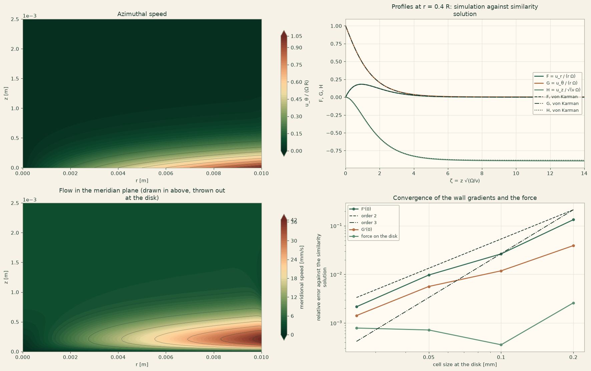

Docs › Examples › Swirl flow above a rotating disk
Rotating flow · 2D axisymmetric
Swirl flow above a rotating disk
A disk turns in water at rest: the wall drags the fluid round, the centrifugal force throws it outwards and fresh fluid is drawn down onto the disk.
Run locally with OneSimulation. The example downloads are free. Running them requires an activated runtime. OneSimulation 1.0 · CPython 3.13 on macOS (Apple Silicon), Ubuntu 22.04 (x86-64), and Windows x64. Installation and activation · View pilot plans. Scope of the reference checks.


What it computes
OneSimulation reads the water above the disk from a STEP file, cuts the meridian plane and solves the axisymmetric Navier-Stokes equations with swirl (radial, axial and azimuthal velocity) with Taylor-Hood elements and Newton's method, on four meshes and on a domain of twice the size. The open top and rim carry no traction. The script that builds the STEP files comes with the notebook.
What it checks
On the finest mesh the wall gradients agree with the similarity solution of von Karman within 0.22 % (F'(0)) and 0.14 % (G'(0)) and the force on the disk within 0.08 %; the gradients converge over the four meshes. In the larger domain the axial inflow velocity is within 0.02 % of the far value of the similarity solution, which shows that the 1.4 % in the small domain is the truncated domain, not the mesh.
Geometry
Save the STEP files rotating_disk_swirl_flow.step, rotating_disk_swirl_flow_large.step next to the notebook before running it.
The geometry script
The script rotating_disk_swirl_flow_geometry.py builds the geometry with the CAD objects of OneSimulation and writes the files. Change a dimension there, run it, and run the notebook again.
"""Geometry of the OneSimulation example "Swirl flow around a rotating disk".
Builds the water above the rotating disk with the CAD objects of OneSimulation: a cylinder of
10 mm radius and 9 mm height, and a second one of twice the size (20 mm and 18 mm) for the study of
the domain. The model is axisymmetric, so each file holds the half x >= 0 of its cylinder; the cut
with the plane y = 0 is the meridian section. Writes rotating_disk_swirl_flow.step and
rotating_disk_swirl_flow_large.step with the face groups axis (the cut through the axis), disk (the
bottom, which rotates), top (the open upper boundary) and rim (the open outer boundary).
"""
from onesim.cad.d3 import Box, Cylinder
def water(radius, height):
body = Cylinder(radius=radius, length=height).named("water") & Box(
length=radius, width=2 * radius, height=height, origin=(0.0, -radius, 0.0)
).named("half")
named = lambda condition: body.select(faces=condition)
return body.grouped(
axis=named(lambda face: face.id.startswith("half")),
disk=named(
lambda face: not face.id.startswith("half") and abs(face.center[2]) < 1e-9
),
top=named(
lambda face: not face.id.startswith("half")
and abs(face.center[2] - height) < 1e-9
),
rim=named(lambda face: face.kind != "plane"),
)
water(0.010, 0.009).save("rotating_disk_swirl_flow.step")
water(0.020, 0.018).save("rotating_disk_swirl_flow_large.step")The notebook
The complete notebook, cell by cell. Run it to produce the figures and the comparison printout.
A disk turns with the angular velocity \(\Omega=20\) rad/s in water (\(\rho=1000\) kg/m³, \(\mu=1\) mPa s, \(\nu=\mu/\rho\)) that is at rest far above. The length of the boundary layer is \(\delta=\sqrt{\nu/\Omega}=0.224\) mm. The disk and the water above it are a cylinder of radius \(R=10\) mm (\(R/\delta=45\), \(\Omega R^2/\nu=2000\)) and height \(9\) mm (\(40\,\delta\)). In the meridian plane \((r,z)\) the velocity has three components \(u_r,\,u_z,\,u_\theta\) that do not depend on the angle,
| face | condition |
|---|---|
axis | symmetry axis |
disk | turns with \(\Omega\): \(u_r=u_z=0,\;u_\theta=\Omega r\) |
top | open: no traction, the water above is drawn in |
rim | open: no traction, the water leaves radially |
The water comes from the CAD file rotating_disk_swirl_flow.step, written by rotating_disk_swirl_flow_geometry.py with the CAD objects of OneSimulation; a second file rotating_disk_swirl_flow_large.step holds a domain of twice the size.
Reference. For a disk of infinite radius T. von Karman (1921) found that the velocity has the form \(u_r=r\Omega F(\zeta)\), \(u_\theta=r\Omega G(\zeta)\), \(u_z=\sqrt{\nu\Omega}\,H(\zeta)\) with \(\zeta=z\sqrt{\Omega/\nu}\), and that the Navier-Stokes equations reduce to
with \(F=0,\;G=1,\;H=0\) at the disk and \(F,G\to0\) far above (W. G. Cochran, Proc. Camb. Phil. Soc. 30, 1934; C. Rogers and G. Lance, J. Fluid Mech. 7, 1960). The ordinary differential equations are solved here with a boundary value solver, and give the numbers \(F'(0)=0.51023\), \(G'(0)=-0.61592\) and \(H(\infty)=-0.88447\). The wall shear stress \(\tau_\theta=\mu\,\partial u_\theta/\partial z=\rho\,\nu\,r\,\Omega\sqrt{\Omega/\nu}\,G'(0)\) gives the force of the fluid on the disk, \(2\pi\mu\,\Omega\sqrt{\Omega/\nu}\,|G'(0)|\,R^3/3\).
import numpy as np
from onesim.cad.exchange import load
from onesim.materials import NewtonianFluid
from onesim.meshing import TriangularMesher
from onesim.numerics import Numerics
from onesim.numerics.fem import FiniteElement, RevolvedH1SpaceFactory, TaylorHood
from onesim.numerics.linear import SparseDirect
from onesim.numerics.nonlinear import Newton
from onesim.physics.hydrodynamics import (
AxisymmetricFlow,
FlowTraction,
IncompressibleNavierStokes,
RotatingWall,
SymmetryAxis,
)
from onesim.results.comparisons import convergence
from onesim.simulation import Problem, Simulation
from onesim.visualization import plots, theme
from scipy.integrate import solve_bvp
theme.set()Geometry and mesh
section((0, 1, 0)) cuts the half cylinder in the plane through the axis; \(x\) becomes the radius \(r\), \(y\) the height \(z\). The triangles are finest at the disk, where the boundary layer lives, and grow upwards and outwards; four meshes with 0.2, 0.1, 0.05 and 0.025 mm at the disk show the convergence.
density, viscosity, omega = 1000.0, 1.0e-3, 20.0
nu = viscosity / density
delta = np.sqrt(nu / omega)
part = load("rotating_disk_swirl_flow.step")
water = part.section((0, 1, 0))
faces = water.boundaries
radius, height = water.size[:2]
sizes = np.array([0.2e-3, 0.1e-3, 0.05e-3, 0.025e-3])
meshes = [
TriangularMesher(
target_size=4 * size, local_sizes={"disk": size}, grading=0.25
).generate(water)
for size in sizes
]
fig = plots.figure(1, 2, size=(13, 6.5))
plots.geometry(
part,
selection={
"disk": part.boundaries.disk,
"open top": part.boundaries.top,
"open rim": part.boundaries.rim,
},
labels=False,
camera=plots.Camera(elevation=25, azimuth=-60),
title="Half of the water above the disk",
ax=fig[0],
)
plots.mesh(
meshes[1],
groups=("all",),
legend=False,
title=f"Meridian section, 0.1 mm at the disk: {meshes[1].cell_count} triangles",
ax=fig[1],
)
plots.show()Model and solution
AxisymmetricFlow(swirl=True) adds the azimuthal velocity to the meridional components. A RotatingWall turns the disk; the open faces carry no traction. The Taylor-Hood element on the revolved space (quadratic velocity, linear pressure) is solved with Newton's method from a fluid at rest. The same model runs on every mesh, and on the large domain (radius 20 mm, height 18 mm, 0.1 mm at the disk).
fluid = NewtonianFluid(density=density, dynamic_viscosity=viscosity)
def solve(geometry, mesh):
flow = IncompressibleNavierStokes(
domain=geometry.domain(),
material=fluid,
kinematics=AxisymmetricFlow(swirl=True),
)
sides = geometry.boundaries
problem = Problem(
name="Rotating disk",
geometry=geometry,
physics=(flow,),
boundary_conditions=(
SymmetryAxis(physics=flow, boundary=sides.axis),
RotatingWall(
physics=flow, boundary=sides.disk, angular_velocity=(0.0, 0.0, omega)
),
FlowTraction(
physics=flow,
boundary=sides.top | sides.rim,
value=lambda x, y: np.zeros((len(x), 3)),
),
),
)
result = Simulation(
problem=problem,
mesh=mesh,
numerics=Numerics(
spatial=FiniteElement(
element=TaylorHood(), provider=RevolvedH1SpaceFactory()
),
nonlinear_solver=Newton(
linear_solver=SparseDirect(),
absolute_tolerance=1e-12,
relative_tolerance=1e-10,
maximum_iterations=40,
),
initial_guess={flow.velocity: (0.0, 0.0, 0.0)},
),
).solve_stationary()
return result.field(flow.velocity)
velocities = [solve(water, mesh) for mesh in meshes]
large = load("rotating_disk_swirl_flow_large.step").section((0, 1, 0))
large_velocity = solve(
large,
TriangularMesher(
target_size=0.4e-3, local_sizes={"disk": 0.1e-3}, grading=0.25
).generate(large),
)Similarity solution
solve_bvp integrates the five first-order equations for \(F,G,H,F',G'\) from the disk to \(\zeta=20\), where the fluid is at rest within \(10^{-8}\).
zeta = np.linspace(0.0, 20.0, 400)
guess = np.vstack(
(
0.2 * zeta * np.exp(-zeta),
np.exp(-zeta),
-0.88 * (1 - np.exp(-zeta)),
0.2 * np.exp(-zeta) * (1 - zeta),
-np.exp(-zeta),
)
)
similarity = solve_bvp(
lambda z, y: np.vstack(
(
y[3],
y[4],
-2 * y[0],
y[0] ** 2 - y[1] ** 2 + y[2] * y[3],
2 * y[0] * y[1] + y[2] * y[4],
)
),
lambda a, b: np.array([a[0], a[1] - 1.0, a[2], b[0], b[1]]),
zeta,
guess,
tol=1e-10,
max_nodes=100000,
).sol
f_wall, g_wall, h_far = similarity(0.0)[3], similarity(0.0)[4], similarity(20.0)[2]Comparison with the similarity solution
The wall gradients come from the velocity gradient on the disk at \(r=0.4R\), away from the open rim; they are divided by \(r\Omega\sqrt{\Omega/\nu}\) so that they give \(F'(0)\) and \(G'(0)\) directly. The reaction of the disk is the azimuthal force of the fluid on it. \(H\) is read at mid-height, where the similarity solution has reached its far value.
r_eval = 0.4 * radius
scale = r_eval * omega * np.sqrt(omega / nu)
force_exact = (
2 * np.pi * viscosity * omega * np.sqrt(omega / nu) * abs(g_wall) * radius**3 / 3
)
wall = [
np.asarray(v.gradient(np.array([[r_eval, 0.0]])))[0] / scale for v in velocities
]
f_values, g_values = np.array([w[0, 1] for w in wall]), np.array(
[w[2, 1] for w in wall]
)
h_values = np.array(
[
v.evaluate(np.array([[r_eval, 0.5 * height]]))[0, 1] / np.sqrt(nu * omega)
for v in velocities
]
)
forces = np.array([v.reaction(faces.disk)[2] for v in velocities])
errors = {
"F'(0)": np.abs(f_values / f_wall - 1),
"G'(0)": np.abs(g_values / g_wall - 1),
"force on the disk": np.abs(forces / force_exact - 1),
}
print(
f"similarity solution: F'(0) = {f_wall:.5f}, G'(0) = {g_wall:.5f}, H(infinity) = {h_far:.5f}; delta = {1e3 * delta:.3f} mm, R/delta = {radius / delta:.1f}"
)
print(
"disk cell size [mm] triangles F'(0) G'(0) force on the disk [N] H at mid-height"
)
for size, mesh, f, g, force, h in zip(
sizes, meshes, f_values, g_values, forces, h_values
):
print(
f"{1e3 * size:19.3f} {mesh.cell_count:11d} {f:10.5f} {g:9.5f} {force:23.5e} {h:18.5f}"
)
print(
f"finest mesh against the similarity solution: F'(0) {100 * (f_values[-1] / f_wall - 1):+.2f} %, G'(0) {100 * (g_values[-1] / g_wall - 1):+.2f} %, "
f"force {100 * (forces[-1] / force_exact - 1):+.2f} % (infinite disk {force_exact:.5e} N)"
)
print(
f"observed order of the wall gradient F'(0): {convergence(f_values, sizes).order:.2f}, of G'(0): {convergence(g_values, sizes).order:.2f}"
)
wall_large = np.asarray(
large_velocity.gradient(np.array([[0.4 * large.size[0], 0.0]]))
)[0] / (0.4 * large.size[0] * omega * np.sqrt(omega / nu))
h_large = large_velocity.evaluate(
np.array([[0.4 * large.size[0], 0.5 * large.size[1]]])
)[0, 1] / np.sqrt(nu * omega)
print(
f"larger domain, 0.1 mm at the disk: F'(0) {wall_large[0, 1]:.5f}, G'(0) {wall_large[2, 1]:.5f}, H at mid-height {h_large:.5f}; "
f"small domain, same cell size: F'(0) {f_values[1]:.5f}, G'(0) {g_values[1]:.5f}, H {h_values[1]:.5f}; similarity solution {f_wall:.5f}, {g_wall:.5f}, {h_far:.5f}"
)Figure
The azimuthal speed and the meridional flow on the finest mesh, in the meridian plane with the axis on the left, up to a height of ten boundary layer lengths: the disk drags the water round, and the water leaves it radially. Below, the three profiles at \(r=0.4R\) against the similarity solution, and the convergence of the wall gradients and of the force.
z = delta * np.linspace(0.0, 14.0, 160)
profile = velocities[-1].evaluate(np.column_stack((np.full_like(z, r_eval), z)))
fig = plots.figure(
layout=[["swirl", "profiles"], ["meridional", "convergence"]], size=(16, 10)
)
plots.surface(
velocities[-1],
component=lambda u, position: u[:, 2] / (omega * radius),
contours=10,
subdivisions=2,
limits=(0.0, 1.0),
ylimits=(0.0, 2.5e-3),
aspect="auto",
label="u_θ / (Ω R)",
xlabel="r [m]",
ylabel="z [m]",
title="Azimuthal speed",
ax=fig["swirl"],
)
plots.surface(
velocities[-1],
component=lambda u, position: 1e3 * np.linalg.norm(u[:, :2], axis=1),
contours=8,
subdivisions=2,
ylimits=(0.0, 2.5e-3),
aspect="auto",
label="meridional speed [mm/s]",
xlabel="r [m]",
ylabel="z [m]",
title="Flow in the meridian plane (drawn in above, thrown out at the disk)",
ax=fig["meridional"],
)
plots.line(
z / delta,
{
"F = u_r / (r Ω)": profile[:, 0] / (r_eval * omega),
"G = u_θ / (r Ω)": profile[:, 2] / (r_eval * omega),
"H = u_z / √(ν Ω)": profile[:, 1] / np.sqrt(nu * omega),
},
reference={
f"{name}, von Karman": (zeta, similarity(zeta)[row])
for row, name in enumerate(("F", "G", "H"))
},
xlimits=(0.0, 14.0),
xlabel="ζ = z √(Ω/ν)",
ylabel="F, G, H",
title=f"Profiles at r = 0.4 R: simulation against similarity solution",
legend="right",
ax=fig["profiles"],
)
plots.convergence(
sizes * 1e3,
errors,
order=(2, 3),
xlabel="cell size at the disk [mm]",
ylabel="relative error against the similarity solution",
title="Convergence of the wall gradients and the force",
ax=fig["convergence"],
)
plots.show()Going further
Turn the disk faster, to \(\Omega R^2/\nu=10^4\), and watch the edge effects grow; let the fluid above rotate as a solid body (FixedVelocity on the top face) to see the Bodewadt layer replace the von Karman layer; or put a fixed lid at a small distance to study the flow between rotor and stator and the torque of the enclosure.